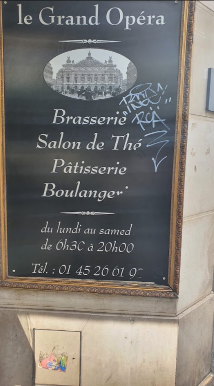

Notre histoire
L'établissement
Une boulangerie-pâtisserie parisienne devenue brasserie et salon de thé, au fil des décennies.
Une boulangerie-pâtisserie parisienne devenue brasserie et salon de thé, au fil des décennies.

Le Grand Opéra est une boulangerie-pâtisserie fondée en 1900, comme en témoigne l'enseigne toujours visible sur la façade. Avec le temps, l'adresse s'est élargie : un étage de brasserie classique, un salon de thé, et toujours le coin boulangerie d'origine, à deux pas de l'Opéra Garnier.
Ici, on peut passer prendre une baguette le matin, s'installer pour un café l'après-midi, ou revenir le soir pour un repas en brasserie — trois usages, une seule adresse.